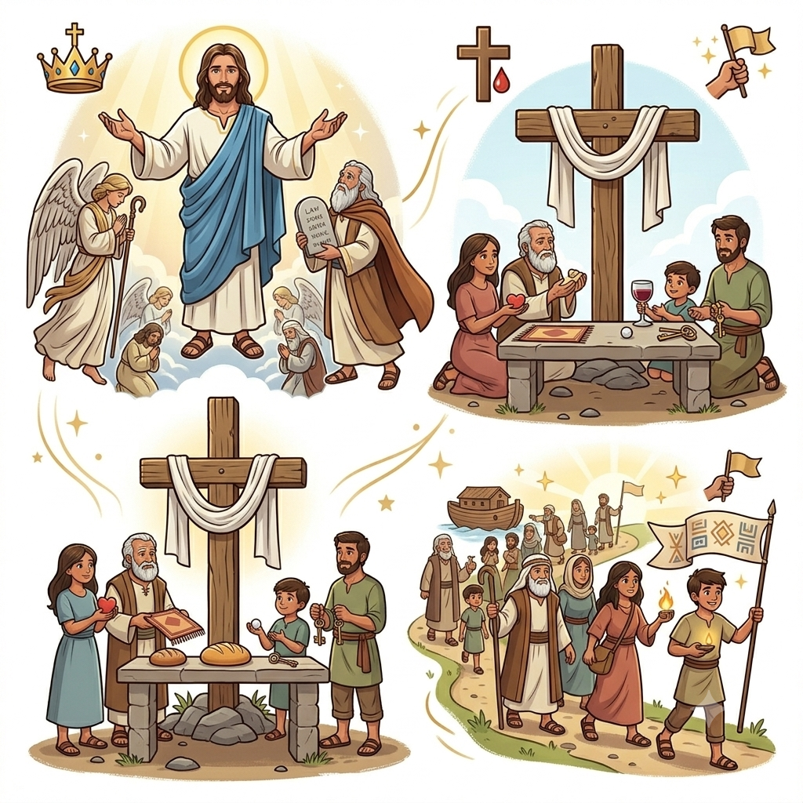
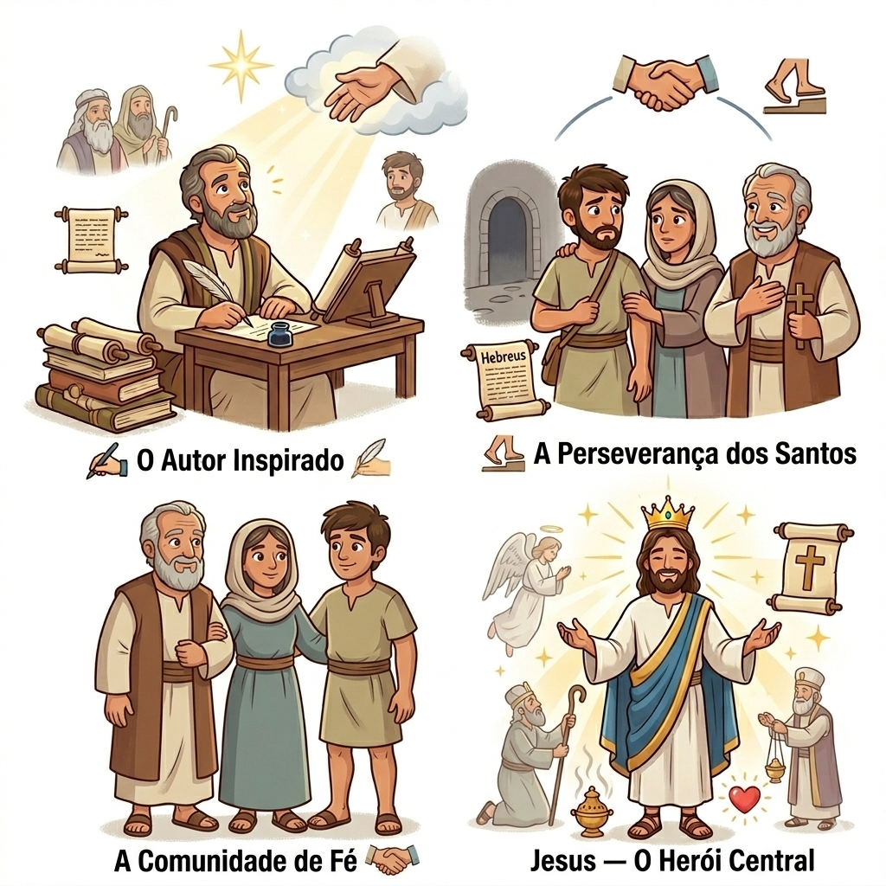
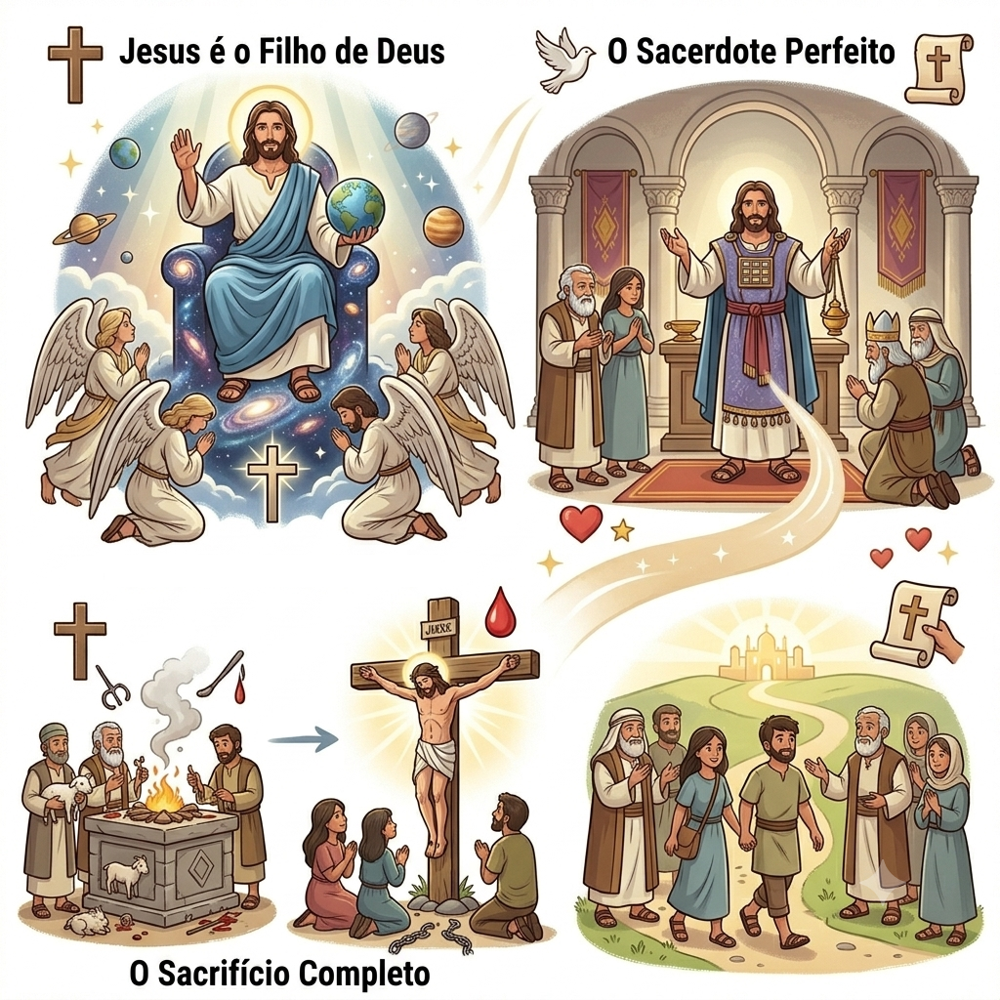
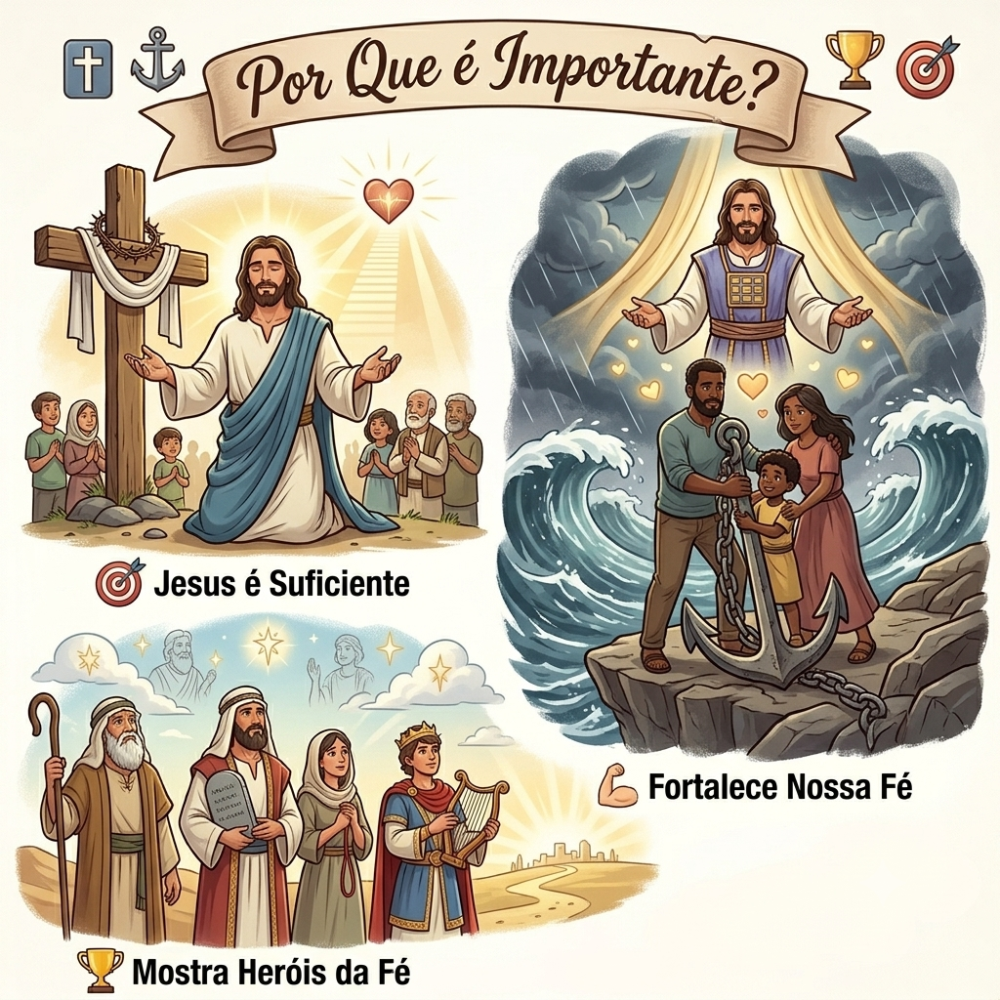
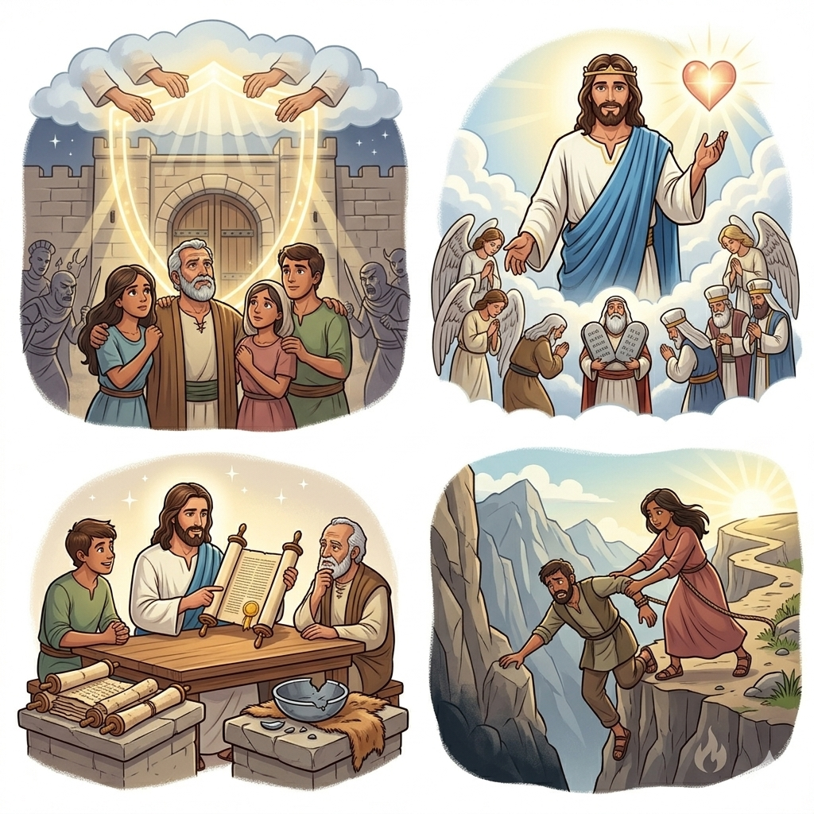
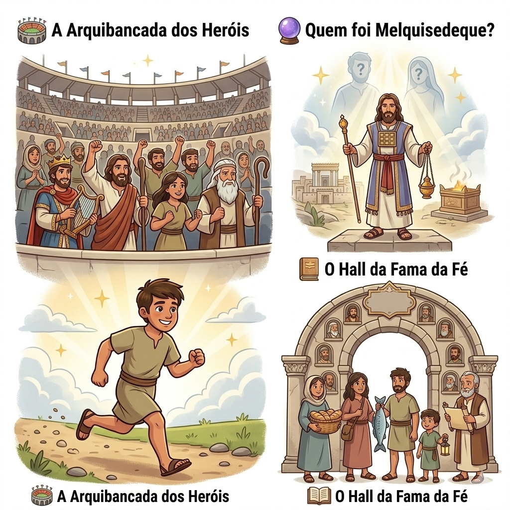

Jesus é Superior — Um Resumo Visual para Crianças
Maior que os anjos, maior que Moisés,
Sacerdote perfeito, o Rei de uma vez!
Filho de Deus, o Salvador sem igual,
Em Jesus temos tudo, Ele é celestial!
📖 Hebreus 1:3-4
Não precisa mais sangue, não precisa altar,
Jesus na cruz veio nos resgatar!
Uma vez por todas, o preço pagou,
Nossos pecados Ele perdoou!
📖 Hebreus 10:10-14
Abraão, Moisés, Davi e Raabe,
Heróis da fé que Deus não esquece!
Com fé em Jesus, também podemos ser,
Campeões de Deus, prontos pra vencer!
📖 Hebreus 11:1-40

Não sabemos quem escreveu Hebreus, mas sabemos que foi inspirado por Deus! Alguns dizem que foi Paulo, outros dizem Barnabé ou Apolo. O importante é que Deus usou alguém especial para escrever esta carta poderosa!
Eram judeus que aceitaram Jesus como Salvador! Mas estavam enfrentando perseguição e tentação de voltar às antigas práticas. Esta carta foi escrita para fortalecer a fé deles e mostrar que Jesus é suficiente!
Ele é o verdadeiro herói de Hebreus! O livro todo fala sobre como Jesus é superior a tudo e todos: anjos, Moisés, sacerdotes e sacrifícios. Ele é o Filho de Deus perfeito!
O livro começa mostrando que Jesus é maior que os anjos! Ele é o Filho de Deus, o criador do universo, e tem toda autoridade no céu e na terra. Ninguém é como Ele!
Jesus não é como os sacerdotes antigos que precisavam fazer sacrifícios todos os dias. Ele é o sacerdote perfeito segundo a ordem de Melquisedeque, que vive para sempre e intercede por nós!
Jesus ofereceu o sacrifício perfeito: Ele mesmo! Na cruz, Ele pagou o preço pelos nossos pecados de uma vez por todas. Não precisamos de mais sacrifícios - Jesus é suficiente!


Hebreus nos ensina que não precisamos de mais nada além de Jesus! Não precisamos de rituais complicados, sacrifícios de animais ou intermediários. Jesus fez tudo por nós na cruz!
Quando passamos por dificuldades e tentações, Hebreus nos lembra de permanecer firmes em Jesus. Ele é a âncora da nossa alma, seguro e firme! Não devemos desistir!
O capítulo 11 é incrível! Ele conta sobre Abraão, Moisés, Raabe, Davi e muitos outros que confiaram em Deus. Eles nos inspiram a também viver pela fé!
O principal objetivo de Hebreus é fortalecer a fé dos cristãos que estavam sendo perseguidos e tentados a desistir. O autor os encoraja a permanecer firmes em Jesus, não importa o que aconteça!
Hebreus foi escrito para mostrar que Jesus é superior a tudo! Ele é maior que os anjos, maior que Moisés, maior que os sacerdotes. Ele é o Filho de Deus, o Salvador perfeito!
O livro explica como Jesus inaugurou uma nova aliança melhor que a antiga. Não precisamos mais de sacrifícios de animais porque Jesus é o sacrifício perfeito e final!
Hebreus alerta sobre o perigo de abandonar a fé em Jesus. O autor encoraja os leitores a não endurecer o coração, mas a perseverar até o fim com confiança em Deus!


Hebreus 11 é conhecido como o "Capítulo da Fé" ou o "Hall da Fama da Fé"! Ele lista mais de 15 heróis da Bíblia que viveram pela fé em Deus.
🌟 Alguns heróis mencionados:
• Abel - ofereceu sacrifício pela fé
• Enoque - andou com Deus
• Noé - construiu a arca
• Abraão - obedeceu a Deus
• Sara - recebeu força para ter um filho
• Moisés - escolheu sofrer com o povo de Deus
• Raabe - escondeu os espias
• E muitos outros!
O capítulo termina dizendo que todos esses heróis esperavam por algo melhor que Deus havia prometido - e esse "algo melhor" é Jesus! Agora nós também podemos fazer parte dessa lista de heróis da fé! 💪
© 2025 - Trilho Kids
Desenvolvido com ❤️ para crianças